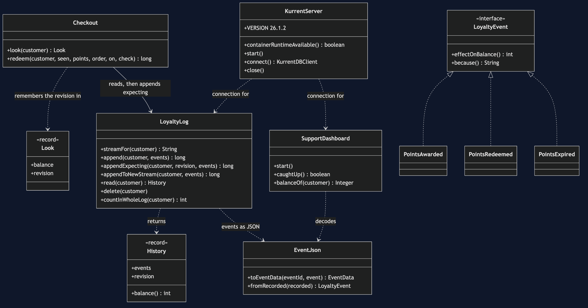
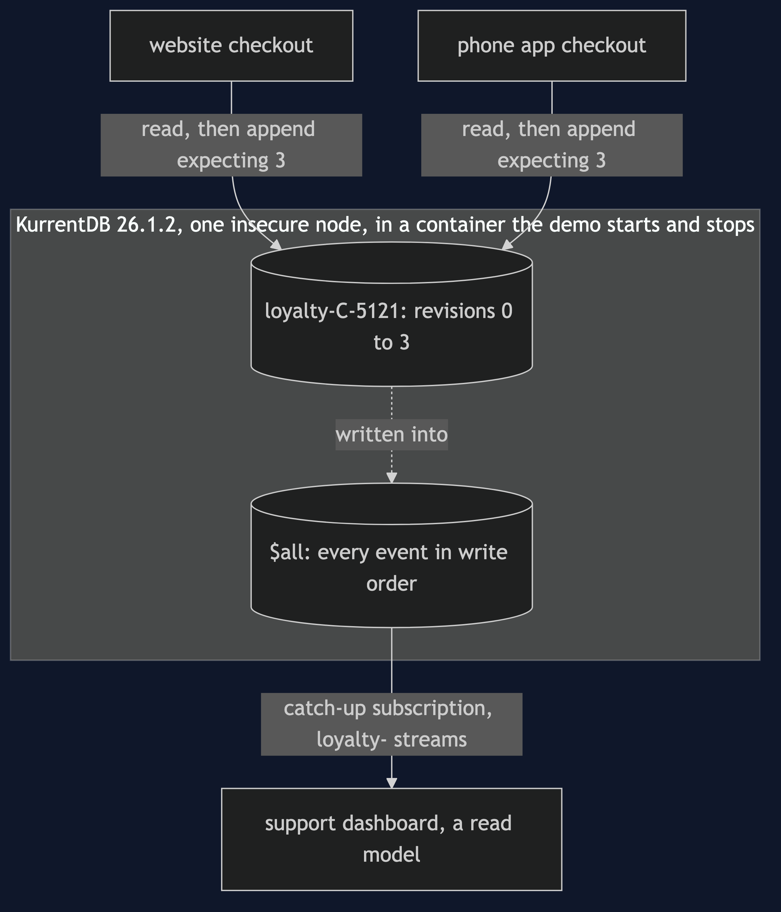
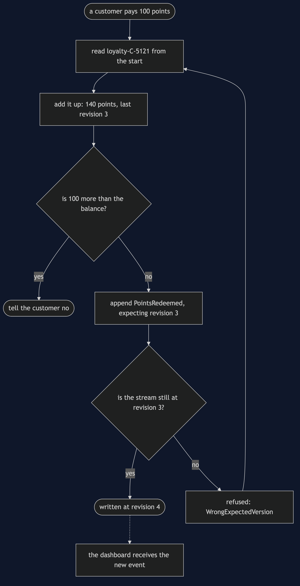
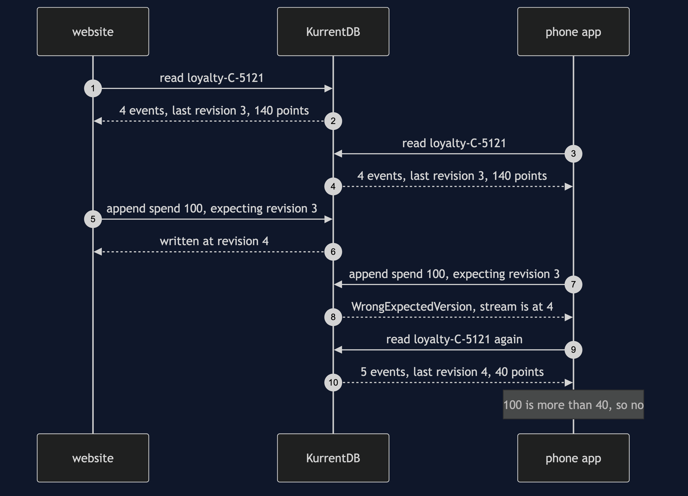
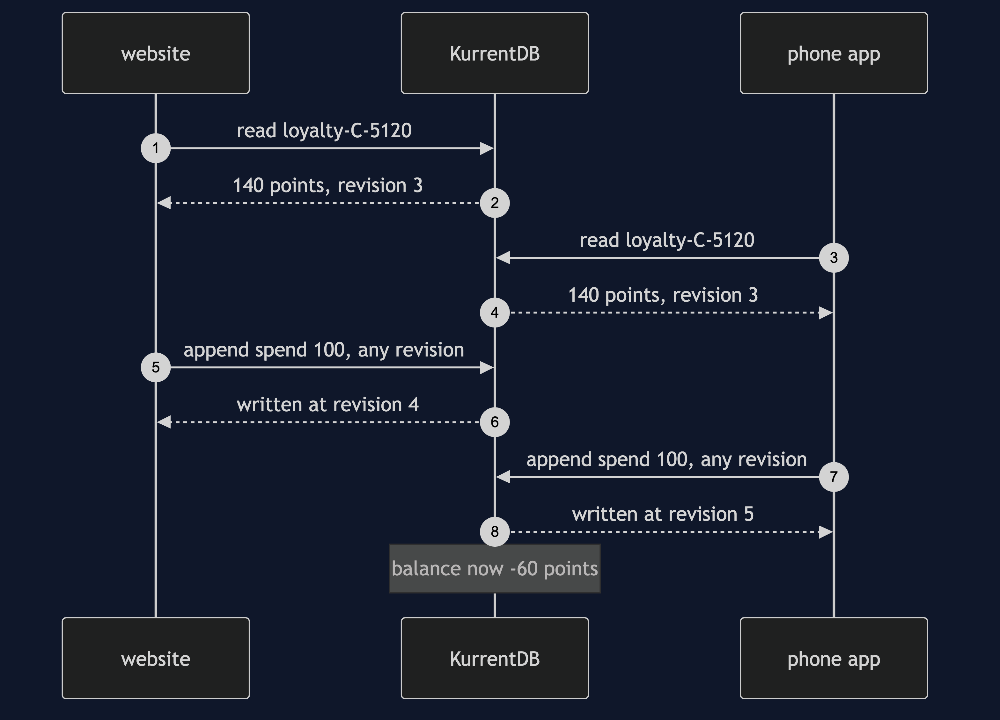
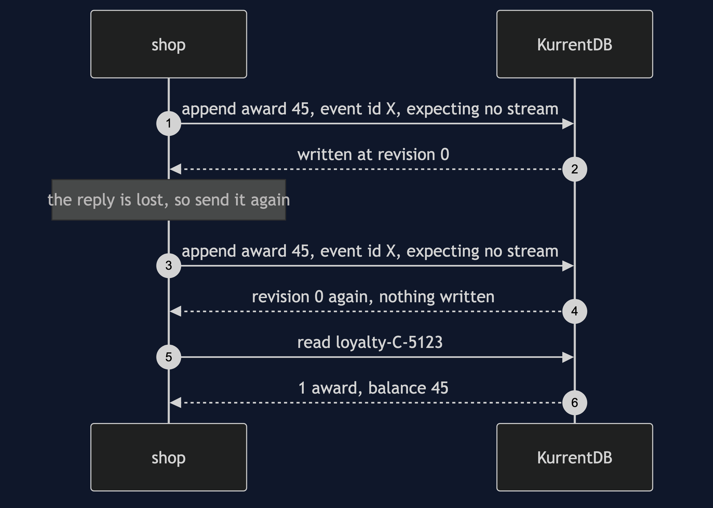
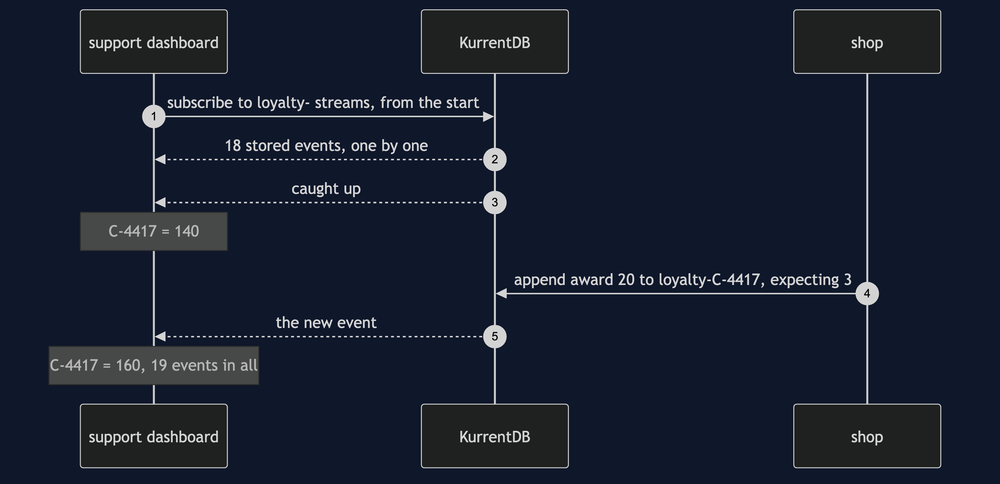
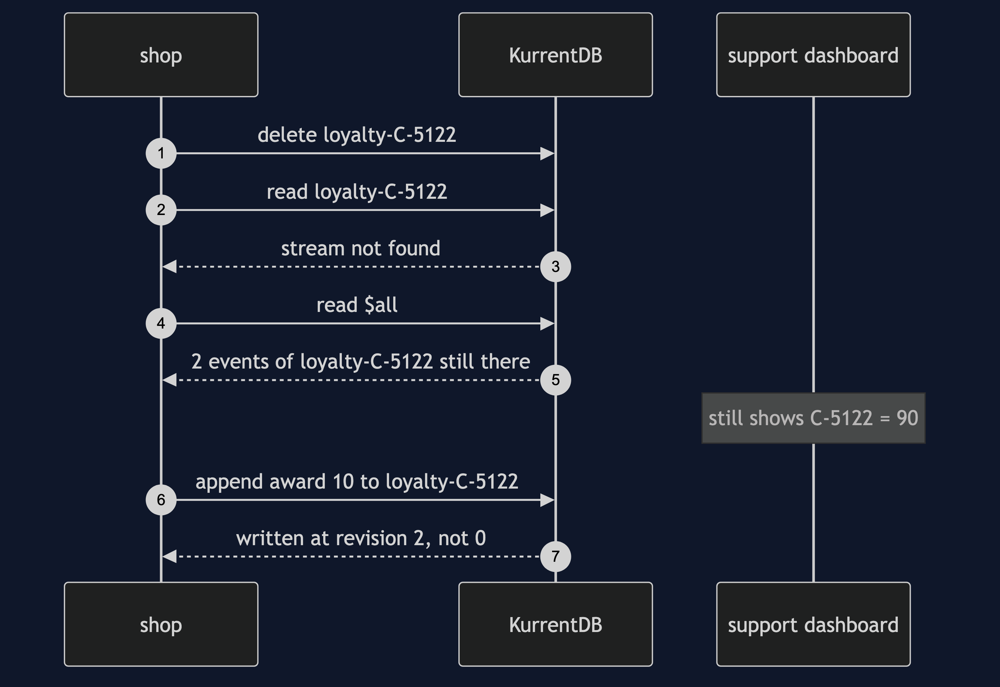

Event Sourcing with EventStoreDB Pattern
src/main/java/com/jk/explore/eventsourcingeventstoredb/
├── EventSourcingWithKurrentDemo.java the six acts, and the race between two checkouts
├── LoyaltyLog.java one stream per customer: append (with or without a check), read, delete
├── Checkout.java look, decide, append — the website and the phone app
├── SupportDashboard.java a read model fed by a catch-up subscription
├── KurrentServer.java starts and stops a real KurrentDB container, insecure, one node
├── EventJson.java an event to JSON text and back, by hand
├── LoyaltyEvent.java PointsAwarded.java PointsRedeemed.java PointsExpired.java
└── Balance.java Poll.java the fold; every wait is a question asked until the answer is yesIn a real event store, two programs can append to the same stream at the same moment. KurrentDB will stop the second one — but only if the append says which revision it looked at, and by default it does not.
This project needs a container runtime. Docker Desktop, or anything Docker-compatible, must be running before you start. The demo brings a KurrentDB server up in a container and takes it down again at the end; nothing is installed and nothing is left behind. With no runtime, the demo prints two sentences saying what to do, and stops, rather than a stack trace.
This project is the real-infrastructure version of the plain-Java Event Sourcing project in this course. That project kept the shop's loyalty events in a list inside one program, with one writer. This one keeps them in KurrentDB, a database built only for events, and shows what a list inside one program cannot: two writers racing for the same points, the check that settles the race, a retry the database recognises, a screen that rebuilds itself by reading the history, and a delete that hides rather than erases.
EventStoreDB is now called KurrentDB
The project's directory keeps the name EventStoreDB, because that is the name most books, talks and job adverts still use. At the end of 2024 the company behind it, Event Store Ltd, renamed itself Kurrent, and from its 2025 release the database has been called KurrentDB. For a learner the rename means three things and no more:
- It is the same database. Streams, revisions, the expected-revision check, subscriptions and deletes all work as they did. Anything you read about EventStoreDB still applies.
- The names changed. The Docker image is
kurrentplatform/kurrentdbrather thaneventstore/eventstore; the Java library isio.kurrent:kurrentdb-clientrather thancom.eventstore:db-client-java; its classes start withKurrentDBrather thanEventStoreDB; the connection string startskurrentdb://rather thanesdb://; settings areKURRENTDB_*rather thanEVENTSTORE_*. - New versions only come under the new name. The last EventStoreDB line, 24.10, still gets fixes, but new releases are KurrentDB. This project pins the newest: KurrentDB 26.1.2 and
kurrentdb-client1.2.1.
One word also changed inside the client: what older examples call ExpectedRevision is now StreamState. The refusal is still named WrongExpectedVersionException, a name older than both.
Run
./gradlew runSix acts, against a real KurrentDB. Every number quoted below, and in every document and slide in this project, comes from this program's own output. Two runs back to back print exactly the same thing.
ONE. A real log, read back from the start.
4 events appended to the stream loyalty-C-4417. KurrentDB numbered them revision 0 to 3.
a second connection reads the stream from the start and adds it up:
revision 0 2025-03-01 earned 60 points on order ORD-8801 balance 60
revision 1 2025-03-03 spent 25 points on order ORD-8814 balance 35
revision 2 2025-03-08 earned 120 points on order ORD-8907 balance 155
revision 3 2025-03-14 lost 15 points to the twelve-month expiry balance 140
balance: 140 points, from 4 events. nothing stores 140; it was added up just now.
the client can append to a stream, read it, and delete all of it. it has no call that changes one event.
TWO. Two checkouts at once, with no check.
C-5120 has 140 points. the website and the phone app both look: 140 points, at revision 3.
both decide 100 is not more than 140, and both append a redemption with the check off.
both appends accepted, at revisions 4 and 5. balance now: -60 points.
the customer spent 200 points they had only 140 of, and the server was never asked to mind.
THREE. The same race, with the expected revision.
C-5121 has 140 points. both checkouts look: 140 points, at revision 3. both append, expecting revision 3.
appends accepted: 1, at revision 4. appends refused: 1.
the refusal is WrongExpectedVersion: expected revision 3, but the stream is at revision 4.
the refused checkout looks again: 40 points, at revision 4. 100 is more than 40, so it tells the customer no.
balance now: 40 points. nothing was locked; the server compared one number.
FOUR. A retry the server recognises.
the shop awards C-5122 45 points for order ORD-9001, loses the reply, and sends the award again.
sent again with a new event id: 2 awards for ORD-9001 in the stream. balance 90.
for C-5123 the first send is written at revision 0, expecting a stream that does not exist yet.
sent again with the same event id and the same expectation: the server answers revision 0 again, and writes nothing.
1 award in the stream. balance 45. the retry was recognised, not refused, so the shop never has to guess.
FIVE. A screen that catches up.
the support dashboard starts after all of that and asks for every loyalty stream from the start.
it receives 18 events that were already stored, and the server tells it it has caught up.
it shows C-4417 = 140, C-5120 = -60, C-5121 = 40, C-5122 = 90.
a new order awards C-4417 20 points. moments later the dashboard shows C-4417 = 160, with 19 events received in all.
nobody told the dashboard. it is a second copy, kept current by reading the log.
SIX. The bill: deleting a stream.
customer C-5122 asks to be forgotten, and the shop deletes the stream loyalty-C-5122.
reading the stream now: stream not found.
reading the store's whole log, every stream at once: 2 events of loyalty-C-5122 are still there, until a clean-up called a scavenge runs.
the support dashboard still shows C-5122 = 90. the delete reached the stream, not the copies built from it.
a later order writes to the same stream name. it is accepted at revision 2, not 0, and reading the stream shows 1 event.
and this server ran with security off: no TLS, no passwords, in 1 container. production must never run like that.The race in acts two and three is real: two threads, each with its own connection to the server, each reading the stream, then both appending at once. They wait for each other between looking and appending, so both always see the same revision; after that, which one reaches the server first is up to the machine. That is why the output never says which checkout won — only that exactly one did, at revision 4. The counts are exact on every run, because the server compares the revision under its own lock; only the winner's name would vary, and it is not printed.
The first run downloads the KurrentDB image, about 590 MB unpacked on Apple silicon, and takes longer. After that a run takes about five seconds, most of it the container starting.
Test
./gradlew test3 test classes, 20 test methods. PlainPartsTest (9) needs nothing installed: the fold, the JSON, a checkout's own rule and the no-runtime advice. RealKurrentTest (9) starts one KurrentDB for the whole class and asks it directly: events are numbered from 0 and read back in order by another connection; an append expecting an old revision is refused and writes nothing; an append expecting no stream is refused once the stream exists; with the check off both checkouts spend the same points; with the expected revision exactly one wins; a retry with the same event id is written once and one with a new id is written twice; a late dashboard catches up and then follows new events; and a deleted stream is not found, stays in the whole log, and carries on its numbering. DemoRunsTest (2) runs the demo, asserts every figure the documents quote, and runs it twice to show the output is identical.
There is no Thread.sleep anywhere under src/test. Every wait is a poll on something that can be asked — whether the dashboard has caught up, whether it shows the new balance — with a limit that fails the test rather than hanging it. KurrentDB has no "empty everything" command, so each test uses its own customer and therefore its own stream. The tests that need KurrentDB are skipped when no container runtime is there; the rest still run.
What the simulation got right, and what it left out
This is the reason this project exists, so it comes before anything else.
What the plain-Java Event Sourcing project got right. All of the idea. An event is a fact in the past tense; it is only ever added, never changed; the balance is not stored anywhere, it is added up from the events every time; and the events can tell you why the balance is what it is. Every one of those holds on KurrentDB, and the first act reproduces the twin's own figures: the same four March events, the same 60, 35, 155 and 140, read back by a second connection. The client library, like the twin's list, has no call that changes one event.
What it left out, first and the headline: two writers at once. The twin's log was a list inside one program, with one writer, so no two decisions could ever overlap. Its own comment says the store "does not validate" an append, and with one writer it never had to. A real shop has a website and a phone app. In the second act both look at customer C-5120, both see 140 points at revision 3, both decide 100 is affordable, and both append a spend. KurrentDB accepts both, at revisions 4 and 5, and the balance is -60. In the third act the same race carries the expected revision: both append "only if the stream is still at revision 3". One is accepted at revision 4; the other is refused with WrongExpectedVersion, "expected revision 3, but the stream is at revision 4", looks again, sees 40 points, and says no. The balance is 40. No lock was taken; the server compared one number. And the check is off unless you ask for it: in the Java client an append's default is StreamState.any(), so code that never mentions a revision races exactly as act two does.
Second: a retry. The twin's Act 3 found a release that awarded points twice, and fixed the reading code afterwards. Over a network the same double award happens without any bug: an append's reply is lost, and the writer sends it again. The fourth act does that. Sent again with a new event id, the award is written twice, balance 90. Sent again with the same event id and the same expected revision, KurrentDB answers revision 0 — the answer it gave the first time — and writes nothing, balance 45. The event id, chosen once by the writer, is how the server recognises a retry.
Third: a reader that starts late. The twin's read side was a method that folded a list on demand. Here the support dashboard is a separate reader holding its own copy of every balance — a projection, or read model — fed by a catch-up subscription. It starts last, receives the 18 events already stored, is told it has caught up, and then receives the next award as it is written: C-4417 goes from 140 to 160 with nobody telling it.
Fourth: a delete that hides. The twin's erasure removed events from its list, and they were gone. KurrentDB's normal delete — a soft delete — makes the stream unreadable at once ("stream not found"), but its 2 events are still in the store's one log of everything, called $all, until a clean-up called a scavenge runs; the dashboard, which copied them, still shows C-5122 = 90; and a later write to the same stream name is accepted at revision 2, not 0, with the old events hidden. Erasing a customer is a job for every copy, not one call. (KurrentDB also has a hard delete, called a tombstone, which forbids the name for ever; it too leaves the bytes until a scavenge.)
What the simulation had that KurrentDB does not. The twin's events were Java objects in memory; here each one crosses the network as an event type and a piece of JSON text, and every reader must agree on that format. The twin needed nothing running; this project needs a container of about 590 MB, and it ran that container with security switched off — no TLS, so nothing is encrypted, and no passwords, so anyone who can reach the port can read and write every stream. That is acceptable for a demo on one machine and never for production. The twin's Act 6 (snapshots), Act 8 (versioned events) and Act 9 (event sourcing is not CQRS) are unchanged by a real store and are not repeated here.
Technologies and versions
| What | Version | Why it is here |
|---|---|---|
| Java | 21 | The repository standard, via the Gradle toolchain block |
| Gradle | 9.2.1 | The wrapper in this directory; no separate install needed |
| KurrentDB (formerly EventStoreDB) | 26.1.2 | The event store, as kurrentplatform/kurrentdb:26.1.2 on Intel machines and its ARM build 26.1.2-experimental-arm64-10.0-noble on Apple silicon; the newest release. Run as one node, insecure, with server-side projections off |
| KurrentDB Java client | 1.2.1 | io.kurrent:kurrentdb-client, the newest release; the renamed successor of com.eventstore:db-client-java (last release 5.4.5). Talks gRPC to port 2113 |
| Testcontainers | 2.0.5 | org.testcontainers:testcontainers; starts and stops the container from inside the demo on a free random port, and waits for /health/live. There is no KurrentDB module, so the plain container type is used |
| slf4j-simple | 2.0.17 | Logging for the two libraries above, turned off so the demo's own output is the only output |
| JUnit 5 | 5.10.2 | Test runner |
| A container runtime | Docker 24 or later, or compatible | Runs KurrentDB. Must be running before you start |
Nothing is held back: every version is the newest generally available release. Two things are worth knowing. KurrentDB publishes no Alpine image; its images are Ubuntu-based and about 590 MB, the largest in this batch. And KurrentDB's vendor publishes its ARM build under a tag it labels "experimental"; it is the same 26.1.2 release, and KurrentServer picks the right image for the machine's container runtime. See docs/dependencies.md and docs/prerequisites.md.
Learning Material
| Document | What it covers |
|---|---|
docs/problem-statement.md | The twin's version, and what is new |
docs/event-sourcing-with-eventstoredb-pattern-explained.md | KurrentDB's words in plain language, and six acts |
docs/class-diagram.md | The types |
docs/architecture-diagram.md | Two checkouts, one dashboard, one KurrentDB |
docs/data-flow-diagram.md | What paying with points does, step by step |
docs/sequence-diagram.md | Written for a listener with the screen off |
docs/uml-diagram.md | Four sequences |
docs/animation.html | The six acts in a browser |
docs/prerequisites.md | What you need installed, and what you need to know |
docs/session.md | A one-hour taught session |
docs/dependencies.md | What KurrentDB and Testcontainers are, what they cost, and that skipping this project loses none of the pattern |
docs/spec.md | The generated specification |
docs/youtube.md | Title, description and chapters |
The pattern in one picture
The types, and the thing that matters is where the revision travels. A checkout's look returns a balance and the revision it was worked out at; its redeem hands that revision back to the log, which passes it to the server. The dashboard never writes; it only listens.

Where each piece sits
Two checkouts and a support dashboard, each with its own connection, and one KurrentDB in a container holding one stream per customer. Nothing talks to anything but the database.

How the data moves
Paying with points: read the stream, add it up, decide, append with the revision. A refusal goes back to the start, never straight to a second append.

Who calls whom, in order
Both checkouts read the same stream and see revision 3. Both append expecting 3. The first is written at revision 4; the second is refused, reads again, sees 40 points, and says no.

All four sequences
One. Two checkouts with no check. Both appends are accepted and the balance is -60.

Two. A retry with the same event id. The server answers revision 0 again and writes nothing.

Three. A catch-up subscription. 18 stored events, then "caught up", then a new one as it happens.

Four. Deleting a stream. Not found by name, still in the whole log, still on the dashboard.

Video
Built from video/scenes.py by video/build_video.sh. The rendered file is not committed; video/README.md says how it is made.
Where you have already met this
Anywhere money or points move and an auditor may ask why: ledgers, wallets, loyalty schemes, order histories. Axon Server, Marten (on PostgreSQL) and EventSourcingDB are other event stores built on the same two ideas this project shows — a stream per thing, and an append that names the revision it expects. A SQL table used as an event log gets the same check from a unique constraint on the stream name and the revision.
When this is too much
If only one program ever writes a customer's points, the race in act two cannot happen, and the twin's design is enough. If nobody will ever ask how a number got to be what it is, a row holding the number is simpler still. KurrentDB earns its place when several writers must agree on one history, when readers in other services need to follow it as it grows, and when the history itself is what the business sells.
Where this sits
This project pairs with the plain-Java Event Sourcing project in this course, and is its real-infrastructure version in the platform-design-patterns category. Everything it teaches is explained in its own files, so it can be read on its own.